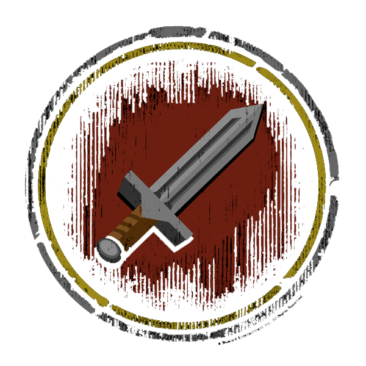
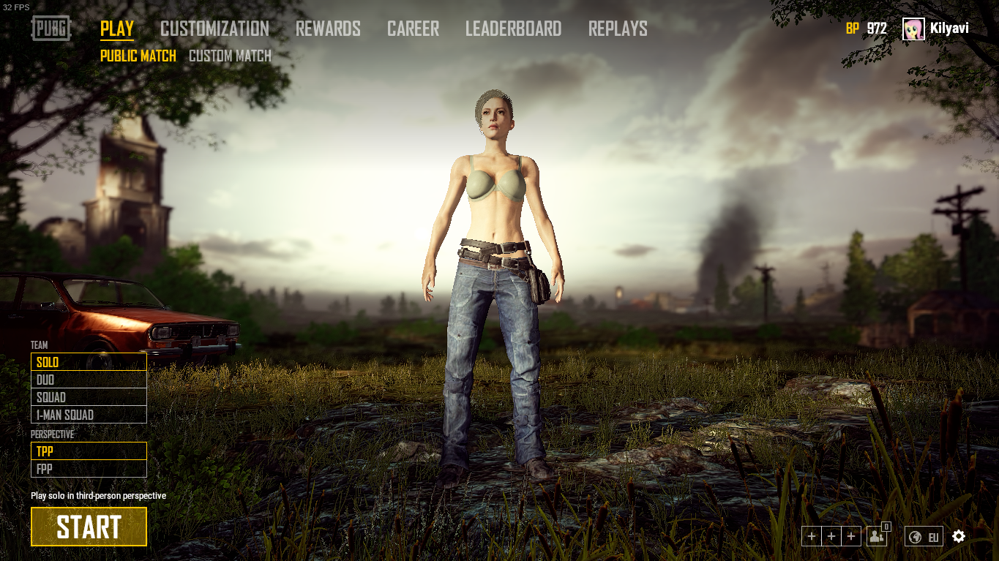

Ориентировочный состав под Battle for Azeroth
BFA не за горами! Уже складывается примерный состав, дабы понимать, кто мы есть и кто нам нужен.
Если кто-то не нашёл себя в списках или же неправильный персонаж - обращайтесь к Джигеру или Илье.
| Шталбер | Кильяви  |
Тейрил |
Бускец  |
|---|---|---|---|
| Лёри | Идеальная | Шонри | Ормот |
| Витроя | Айлена | Мастердимка | Аанарин |
| Сианэкс | Энхорор | Адмиралхром | Альдасий |
| Лучезарая | Сохор | Даркнескс | Элигора |
| Грозамамаш | Дитатиз | Низир | Филзепауэр |
| Рогнарон | Соуфакингбэд | Нралиен | Твоялеталка |
| Олегнароге | ??? | ??? | ??? |
Ну и пока всё. Всем приятной игры!
07.03.2018
Так уж завелось, что у нас часто возникают споры на всякие разные темы, никоим образом не связанные с играми. Например с историей (Привет ГУЛАГ). И основным предметом спора становится достоверность источников и объективность того, или иного мнения.
Зачастую, мнение разделяется на моё и неправильное. В дискуссии я ссылаюсь на разные источники, которым я доверяю, в правдивости которых я убедился. Рассказывать про каждый - весьма долго. Мне в противовес приводят другие источники, о которых я в жизни не слыхивал, аргументируя это тем, что и про мои никто не слышал. Казалось бы, патовая ситуация. Ан нет, нихуя.
Помнится, в последний раз, мне привели в пример какого-то блогера, который "хорошо разбирается в истории". А сегодня на канеле Дмитрия Юрьевича выходит (уже второе) видео, которое очень наглядно иллюстрирует подобные споры.
В этом конфликте фигурируют как раз видеоблогер и историк. Видеоблогер (гр. Евгений Понасенков) выпустил книгу с броским названием "Первая научная история войны 1812 года", в которой рассуждает о том, какой он ахуенный и первый нормальный историк, а все остальные - говно и ватники, которые нихуя не стоят. И немного истории.
01.03.2018
Готовы видосики собак. К сожалению, боссы убиваются на порядок медленнее, чем хотелось бы. Всем приятного просмотра.
Небольшое обновление сайта.
15.02.2018
Прикрутил мониторинг TS'a. Иногда выдаёт ошибку и не подгружает кастомные иконки. Учитывая, что я вообще нихуя не понимаю, как это работает, то уже хорошо. Возможно, когда я таки подучусь, я это исправлю. Также прикрутил кнопочку, для входа в TS из браузера. Круто.
В разработке движка сайта ещё конь не валялся. И я не валялся. И даже кошки там не валялись. Не скоро, в общем...
В ближайшее время, как только сходим вместе в рейд и определимся с составом, обновлю табличу рейдеров. Надо бы даже вынести её в отдельную кнопку.
Ну и ещё висит куча полуобработанных видео, потому что у меня нихера нет времени. Точнее оно есть, но его не хватает. Вот.
Ну а пока всё. Всем приятной игры!
Самый возмутительный рекламный ролик!
Британское управление по стандартам рекламы назвало ролик, который сильнее всего возмутил местных жителей. Лидером антирейтинга стало видео The Whole Chicken от сети закусочных KFC. По мнению зрителей, танцы кур под песню рэпера DMX демонстрируют неуважение к птицам и огорчает (distressing) детей, вегетарианцев и веганов.
Ну, неуважение к курам (КУРАМ БЛЯДЬ!) это ладно, можно понять. Но каким хуем тут оказались дети и веганы, я категорически отказываюсь понимать. Возможно, потмоу что whole и whore созвучно, а по видео курам больше подходит whore. Это оскорбляет детей. Ок. А веганов в принципе всё оскорбляет. Но это настолько притянуто за уши, что даже не смешно. Вспоминается высказывание Джона Шемякина про вину. Мы всем должны и во всём виноваты. И точка.
Далее, в рейтинге самых оскорбительных видео идёт рекламный ролик скидок. Оскорбительный он "На том основании, что он был откровенно сексуальным и, возможно, гомофобным". Тут уже педерастам не угодили. Вообще непонятно почему.
А теперь внимательно следите за руками. Второе место по отвращению занимает ролик "возможно, гомофобный". А третье место по отвращению занимает в принципе изображение целующихся геев в видеороликах. То есть в одном рейтинге у одних и тех же людей прекрасно сосуществует отварщение к пидарасам и осуждение гомофобии.
Мир сошёл с ума. Все вокруг оскорбляются по любому поводу. Обвинять что угодно и кого угодно нынче в тренде. Аж нахуй некого послать.
Источник
Ну а пока всё. Всем приятной игры!
Тактика + Убийство Разрушителя миров (Мифик).
Поздравляю всех с убийством первого босса в мифик Анторусе! Для всех, и в том числе для наших бананов, проебланивших рейд, сделал видосик с тактикой, которую мы на ходу придумывали и диву давались от улучшенных абилок.
Нам всё ещё нужны ДД, так что можете посмотреть видео с убийством, на нём прекрасно видно наш уровень и атмосферу в рейде в целом.
Если кому интересно отдельное подробное текстовое (+.gif) описание абилок и тактики в целом на мифик Анторус - дайте знать. Проще всего в комментариях под видео или в ВК.
Ну а пока всё. Всем приятной игры!
ХМ полностью закрыт! Примите мои поздравления.
Мы полностью закрыли Анторус в героике! Это было непросто, учитывая что некоторых людей мы одевали и обучали с нуля, а в честь некоторых назвали абилки боссов, незамысловато намекая на количество смертей и вайпов.
На данный момент у нас уже половина вещей уходит на диз, трансмог и прок, поэтому нам надо идти и тыкать палочкой мифик. Для этого надо 20 человек, а с этим у нас проблемы. Вроде с танками и хилами устаканилось, но нам очень не хватает дамагеров.
| Гомопатрулио | Фэнги |
Чешигрудь | Селингвен |
|---|---|---|---|
| Ксарбомай | Калдрен | Эльфинир | Гесстакс |
| Совуний | Дитатиз | Заромир | Аанарин |
| Сианэкс | Ребэлион | Дарспейр | Эдуардовеч |
| Обалдеть | Элькунька | Дюфалак | ??? |
Это вроде как полный состав. То есть если никто не проебётся, не родит, не положит хуй на рейд и т.д. То есть невозможно. Поэтому нужны ещё один хил, один хил с дд спеком и пара - тройка дд.
Ну и пока всё. Всем приятной игры!
Обновление PUBG 1.0 от 21.12.2017 на русском.
* Пожалуйста, обратите внимание, когда активна функция посмертной записи и повтора, производительность некоторых PC может быть снижена.
Оптимизация клиента
- Оптимизированы данные о местности для меньшего использования памяти
- Оптимизированы текстуры для меньшего использования памяти
- Оптимизировано море за счет уменьшения волновых эффектов
- Снижены лаги при наличии многих игроков в поле зрения
- Оптимизирована анимация персонажей
- Уменьшено использование памяти персонажами
- Добавлены уровни детализации для дальнейшей оптимизации рендеринга оружия на больших расстояниях
- Оптимизированы различные мировые эффекты
- Оптимизированы различные элементы пользовательского интерфейса
- Уменьшены проблемы с задержкой при загрузке местности
- Уменьшено времея загрузки местности
[Тактика] + [Убийство] Разрушитель миров Кин'Гарота. Анторус.
Смонтировал первые ролики с субботы. На первом рассказывается и показывается тактика и механика босса. На втором видео просто килл такой, каким он был. Приятного просмотра.
Новый видосик
Делать было нечего, мы бегали на аренку. Было весело. Отснято 4 с половиной часа. Тут смонтированно только первые 30 минут. Приятного просмотра.
Конец эпохи застоя.
К ознакомлению:
Мы вновь вернулись в WoW, и сновым запалом набираем людей для покорения последнего рейда в Legion'e и для того, чтобы вступить в Battle for Azeroth состоявшимся коллективом. Для всех новоприбывших, было бы полезно ознакомиться с нами на странице О Проекте, так как мы сильно отличаемся от среднестатистических гильдий.
Коротко о ближайших планах:
Надо для начала познакомиться и посмотреть, кто у нас есть, и что мы с этим можем сделать. Начинать будем, грубо говоря, с нуля. В зависимости от народа, либо будем фармить данжи (Э), либо собирать рейды (пока нормалы) и добирать пугов. Выбраны будут 2 дня в неделю рейдовых, остальные - по желанию и возможностям. Возможно, я буду собирать РБГ в эти дни.
Состав:
Мы (точное количество "Мы" пока назвать сложно) довольно таки способные. Рейд поводить можем. Сайт захучить, песню или книгу написать, меч выковать, на гитаре сыграть. Но! Тем не менее нам всегда нужны деятельные люди не только для пыщ пыщ ололо в рейдах. Если Вы заинтересованы в развитии проекта, и обладаете безграничным энтузиазмом и/или полезными навыками то милости просим.
Буенос Ночес, Дамы и Дамы с пиписьками! С Вами BC News.
Жы Есть!
Главным образом о себе, любимом. Что бы я не делал, чем бы не занимался, а в игры всё тянет и тяяянет. Вот, нелёгкая затащила снова в WoW. Что делать, пока не вкурил, но очень воодушевился будущим аддоном, поэтому надо осваиваться и привыкать к кнопкам. Решил снова собрать наше Сообщество. Времени сейчас крайне мало, но к НГ думаю разъебаться с делами и иметь больше свободного времени. И собственно к чему пишу. Собраться я решил более организованно и конструктивно, поэтому, уважаемые (нет) задроты, стримеры, кодеры, писатели, художники и прочие безработные тунеядцы - готовьте конструктивные предложения и разрабатывайте идеи. Свои концептики есть, но времени, как уже писал, нет.
Связь.
Я таки решил перейти в Twich (Curse), как и предлагал давно. TS будет также висеть, как резерв, но собираться будем в твиче. Качество хорошее, удобный чатик, картинки, обмен файлов и многое другое. Сервер наш BarCraft. Там обитаю почти каждый день с 21 до 02 ориентировочно.
Pool. Game Pool.
Как и писал ранее, я вернулся в WoW, и мы с Илей, Костей и Дарком уже пытаемся куда-то там походить. Также активно ебашим сковородками в PUBG (чего и другим советуем). Иногда LoL прочая шалупонь по вкусу. Также выслушаем Ваши предложения.
/dev
В принципе, сайт я и сейчас могу сделать простенький, но для дальнейшей работы мне нужны толковые ребята, которые шарят в php, yii2, git, linux. Хотя бы для дельного совета. Я слышал у нас водятся такие.